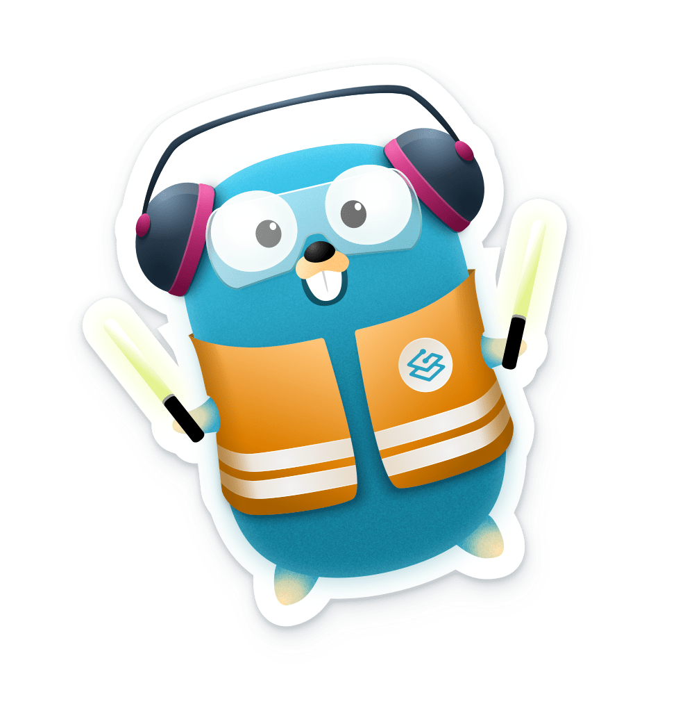
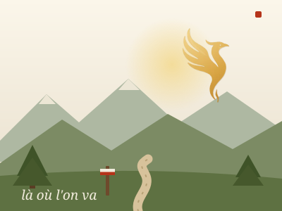
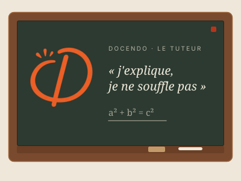
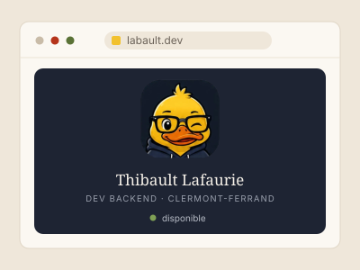
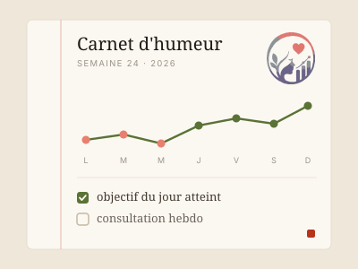
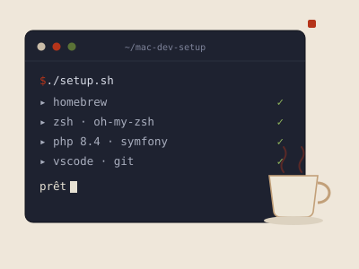
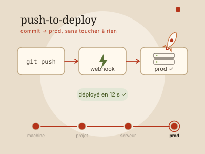
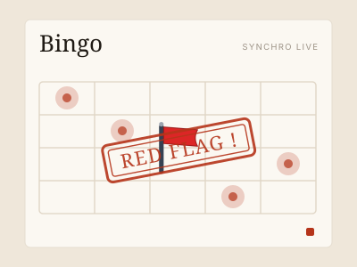
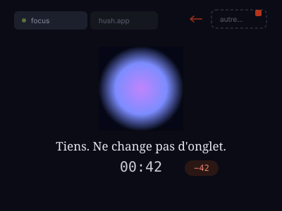
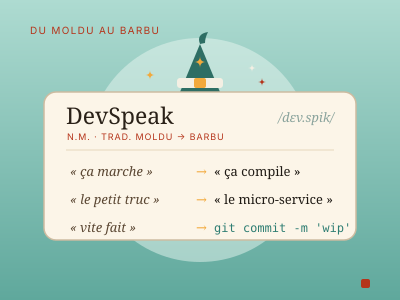

Développeur web, en prod.
Six ans à faire tenir ce qui ne se voit pas.
Backend depuis six ans. Quelques régressions, beaucoup de relectures, et jamais de déploiement le vendredi.
Pour bien faire ce métier (dans de bonnes conditions et avec de vrais résultats), trois qualités me semblent indispensables : être organisé, volontaire, et impliqué jusqu'à la dernière ligne. Je crois cocher les trois.
Je crois aux API qui ne réveillent personne. Aux tests qu'on lit comme une histoire. Aux logs qu'on consulte avec plaisir.
Six ans à construire et faire évoluer le produit de Quizzbox Solutions, un outil de gestion pour les centres de formation et les centres d'examens. Du recueil du besoin à la maintenance du legacy, en passant par l'optimisation continue et l'écoute des utilisateurs.
Avant ça : DUT Informatique puis Licence Pro Développement Web à l'IUT Clermont Auvergne, dont une année d'alternance déjà passée chez Quizzbox.
Expérience
Loisirs
Lecture - thrillers et romans à suspense, j'adore
Musique - pas que de l'écoute
Sport - abonnement à la salle, maintenant faut y aller
Jeux vidéos - les meilleurs se jouent avec les amis
Techniques & maîtrise
PHP 7.0 → 8.3
Présent depuis le début, souvent moqué, jamais remplacé. Migration de 7.0 à 8.3 sur le codebase Quizzbox. Un langage qui a grandi, et moi avec.
Symfony 2.8 → 7.4
Framework de référence. Maintenance du legacy 2.8, migrations successives jusqu'à 7.4 : Doctrine, Messenger, Security, Events... pas un composant qu'on n'ait pas retourné.
MySQL / MariaDB
La base. Littéralement. Schémas relationnels, migrations Doctrine, index pour les requêtes qui s'emballent et du SQL brut quand l'ORM fait ses caprices.
PostgreSQL
Quand MySQL ne suffit plus. Types natifs, JSON... pour les modèles de données qui ont des ambitions.
Docker
Stacks multi-services reproductibles : php-fpm, MariaDB, Redis, Mailpit... Fini le classique ça tourne chez moi.
Git
Versionning quotidien depuis le premier commit. GitHub Actions pour CI/CD, déploiement auto à chaque merge. L'historique dit tout (sauf les idées du vendredi soir).
HTML / CSS
Les fondamentaux qu'on sous-estime, jusqu'au premier bug CSS en prod. Sémantique, responsive, animations... pour ne plus jamais inventer des noms de classes.
JavaScript
Vanilla JS d'abord. Pas de framework front, pas encore.
FrankenPHP
Serveur PHP nouvelle génération : HTTP/2 natif, worker mode, intégration Caddy. Déployé en prod sur Red Flag Bingo. C'est PHP, mais il a survécu à l'expérience.
Nginx
Serveur web et reverse proxy. Virtual hosts, headers, HTTPS et la vraie satisfaction de comprendre les blocs location {} sans relire la doc.

Traefik
Routage automatique via labels Docker, TLS Let's Encrypt en deux lignes, middlewares et redirections. Plus jamais de conf Nginx à réécrire en urgence à 23h.
En apprentissage
React, Node.js, l'exploration de l'autre côté du miroir. Backend forever, mais ce serait dommage de rester là.
Quelques projets...
Rangés par intention plutôt que par date : du livrable client à l'expérience du dimanche soir.

La où l'on va
Site vitrine sur-mesure réalisé pour un client, du cadrage au déploiement. (Lien provisoire, le temps que le domaine définitif arrive.)
voir le site ↗
Docendo
Suivi et accompagnement scolaire avec un tuteur IA : un chat qui guide sans souffler les réponses, la récitation vocale analysée, et un espace parents (temps, contrôles, alertes).
docendo.fr ↗
Ce portfolio
Le site que vous lisez. Une page, zéro JavaScript, zéro build — le portfolio qui se présente lui-même. Un peu méta, oui.
voir le code ↗
Humelis
Application web Symfony de suivi d'humeur reliant patients et professionnels : dashboard, objectifs, consultations, export PDF. Un projet vitrine sérieux — déployé en démo, CI/CD, conforme RGPD.
humelis.labault.dev ↗
Environnement de dev
Tout mon environnement macOS en une commande : Homebrew, Zsh, VS Code, PHP/Symfony — la machine prête avant que le café refroidisse.
voir le repo ↗
Push-to-deploy
Plateforme self-hosted pour VPS mono-serveur : reverse-proxy Caddy, déploiement continu par webhook, sauvegardes chiffrées, monitoring et diagnostic d'incident par IA.
voir le repo ↗
Red Flag Bingo
Bingo collaboratif en temps réel inspiré des codes des apps de rencontre. Symfony, FrankenPHP et Mercure pour la synchro live entre joueurs.
redflagbingo.fun ↗
Hush
Mesure ta patience : change d'onglet et le chrono te le fait payer au retour. Hush ne punit pas la distraction, il la mesure.
hush.labault.dev ↗
DevSpeak
Traduit le langage courant en langage de développeur — un petit dictionnaire moldu → barbu, à charge comique.
bientôt en ligne